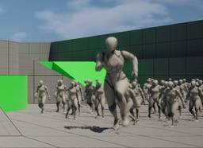

historia Inc – 株式会社ヒストリア
https://historia.co.jp
ゲームの企画・開発・制作協力の株式会社ヒストリアです。UE4やVRの最先端技術を使ってPlayStation®4などのコンシューマーゲームやアーケードゲーム、デジタルコンテンツを創出し、人生観を変えるような体験を提供します。
フィード

[UE5]UIデザイナー向け！マテリアルとアニメーションで表現を拡張しよう
historia Inc – 株式会社ヒストリア
執筆バージョン: Unreal Engine 5.8 こんにちは。 今回はUIマテリアルの表現が広がる考え方やノードの組み合わせ方と、WBPのアニメーションタイムラインでマテリアルパラメーターをコントロール […]The post [UE5]UIデザイナー向け！マテリアルとアニメーションで表現を拡張しよう first appeared on historia Inc - 株式会社ヒストリア.
2日前

[UE5] プレイヤーについてくる集団を作成しよう
historia Inc – 株式会社ヒストリア
執筆バージョン: Unreal Engine 5.7 こんにちは！今回は第26回ぷちコンのテーマ「だん」にちなんで、 プレイヤーが近づくとついてくる集団を作ってみましょう！ 完成イメージはこちら！ &nbs […]The post [UE5] プレイヤーについてくる集団を作成しよう first appeared on historia Inc - 株式会社ヒストリア.
8日前

[UE5]止まった時の中を移動したい！
historia Inc – 株式会社ヒストリア
こんにちは 以前、アクションゲームで使える時戻しスキルを作成しました。 [UE5]スプラインに沿って時を戻したい！ ─ところでUnrealEngineでは、プロジェクト作成時にファーストパーソンプリセットを […]The post [UE5]止まった時の中を移動したい！ first appeared on historia Inc - 株式会社ヒストリア.
9日前
[UE5]3分で花びらが散っているエフェクトを作る
historia Inc – 株式会社ヒストリア
執筆バージョン: Unreal Engine 5.7 こんにちは。 今回はNiagara Systemの「Blowing particles」というテンプレートを使い花びらが散っているエフェクトを制作してみます。 とって […]The post [UE5]3分で花びらが散っているエフェクトを作る first appeared on historia Inc - 株式会社ヒストリア.
16日前
第26回UE5ぷちコン 協賛社ライセンス一覧
historia Inc – 株式会社ヒストリア
2026年7月17日（金）～8月30日（日） Unreal Engine 5 学習向けミニコンテスト 第26回UE5ぷちコン開催中！ 今回のテーマは「だん」 今回もたくさんのスポンサー企業さまにご協賛いただ […]The post 第26回UE5ぷちコン 協賛社ライセンス一覧 first appeared on historia Inc - 株式会社ヒストリア.
23日前
[UE5]ポストプロセスでRadial Blur（放射状ブラー）マテリアルを作ってみた
historia Inc – 株式会社ヒストリア
執筆バージョン: Unreal Engine 5.4 はじめに：Radial Blurとは？ ゲームのダッシュ時や爆発の瞬間、「画面の中心に向かって視線がグッと引き込まれるような、周囲の激しいブレ（ボケ）」 […]The post [UE5]ポストプロセスでRadial Blur（放射状ブラー）マテリアルを作ってみた first appeared on historia Inc - 株式会社ヒストリア.
23日前
[UE5]Widget不要！ShowObjectDialogで簡単に設定画面を作ろう
historia Inc – 株式会社ヒストリア
執筆バージョン: Unreal Engine 5.7 パラメータを渡すような便利機能を作る時に、ある程度の使いやすさは確保したい。 そのために、詳細パネルのようなUIを活用したいけど、似たようなUIをWidgetで作るの […]The post [UE5]Widget不要！ShowObjectDialogで簡単に設定画面を作ろう first appeared on historia Inc - 株式会社ヒストリア.
1ヶ月前
『Caligula-カリギュラ-』シリーズ10周年記念プレゼントキャンペーン！
historia Inc – 株式会社ヒストリア
『Caligula-カリギュラ-』シリーズ10周年を記念して、プレゼントキャンペーンを実施します。ぜひご参加ください！ 応募期間 2026年6月23日(火)～2026年7月5日(日)23:59 賞品 『Caligula- […]The post 『Caligula-カリギュラ-』シリーズ10周年記念プレゼントキャンペーン！ first appeared on historia Inc - 株式会社ヒストリア.
1ヶ月前
第26回UE5ぷちコン ゲームジャム開催のお知らせ
historia Inc – 株式会社ヒストリア
Unreal Engine 5学習用コンテスト第26回UE5ぷちコンサイドイベント 「第26回ぷちコンゲームジャム」開催決定！ テーマは「だん」 Unreal Engine 5学習用コンテ […]The post 第26回UE5ぷちコン ゲームジャム開催のお知らせ first appeared on historia Inc - 株式会社ヒストリア.
1ヶ月前
【予告】Unreal Engine 5 学習向け作品制作コンテスト「第26回UE5ぷちコン」 7月17日（金）より開催！
historia Inc – 株式会社ヒストリア
２、３日でサクッと作ってサクッと応募 “第26回UE5ぷちコン”開催決定！ 開催期間：2026年7月17日(金)～2026年8月30日(日) (8月31日(月)AM10:00まで) UE5ぷちコンは、株式会 […]The post 【予告】Unreal Engine 5 学習向け作品制作コンテスト「第26回UE5ぷちコン」 7月17日（金）より開催！ first appeared on historia Inc - 株式会社ヒストリア.
1ヶ月前